Setting Up a Closed Mode Flex Station
Closed mode provides a kiosk type functionality. The Flex desktop app is automatically launched on starting Windows, and operators cannot shut it down, minimize it, or switch to other applications. Closed mode is not available on mobile devices.

Operating system compatibility
Windows 11 Enterprise, Windows 10 Enterprise
Set up How the Flex Client Will Operate
The first step, before installing closed mode, is to fully set up the Flex client the way you want it to work.
- On the Desigo CC server, configure a Flex client so that you end up with a working [Flex client application URL].
- To do this, follow the steps in Setup Checklist for Flex Client.
- Make sure that the [Flex client application URL] is reachable from the computer where you want to install closed mode.
- You can install closed mode on either an anonymous or an identified Flex station. However, if you also want a default user to be automatically logged on to Desigo CC, you will require an identified client.
Do one of the following: - At this point, from the computer where you want to install closed mode, check that you can correctly access the Flex web app in the browser:
- If the [Flex client application URL] is marked "untrusted", you can import the required certificate: see Access Flex Client URL.
- In case of an identified client, on the station object in System Manager check that the IsLoggedIn property is
True. See Check the Outcome from the Identified Flex Station. - If you also want automatic logon of a default Desigo CC user, you can configure this now: See Configuring a Flex Station With Default User.
(This configuration will only work with an identified Flex client).
- After this, when you next access the [Flex client application URL], instead of seeing the Desigo CC login page, the Flex default user will be automatically logged in.
NOTE: In case of an identified client, make sure there is a copy of the .PFX host certificate file available on the Flex computer. You will need it in a later step. This is the same certificate, Issued to the Flex station, that you imported into the Current User\Personal store during the identified client configuration. You must also know the password of this .PFX host certificate. This is the password that you provided when creating the certificate in SMC, and which you used to import the certificate into the Flex station.
Enable Download of Closed Mode Application
To allow visibility of the link to download the closed mode application from the About page of the Flex web app, users groups must be properly configured with appropriate application rights. For background information, see User Group Administration.
- System Manager is in Engineering mode.
- System Browser is in Management View.
- Select Project > System Settings > Security.
- Select the Security tab.
- In the Groups list, select the appropriate user group. For example, FlexClosedModeGroup.
- To enable the download of the closed mode application from the About page of the Flex web app for the selected management station user group:
- In the Application Rights expander, expand System management and select the Flex Client Closed Mode Setup check box.
- Click Save
 .
.
Install and Prepare the Flex Desktop App
- Log on as Administrator to the computer where you want to install closed mode.
- Download and install the Flex desktop app. Follow the instructions in Installing Flex Client as Desktop App.
In particular, when you first start up the desktop app, for the initial security settings, do the following: - If there is a Connection not private dialog box, it means the Flex client application URL is still untrusted. Click the provided link to import the certificate.
Once you do this the dialog should no longer appear next time. - In case of an identified client, in the certificate selection dialog box select the correct host certificate, and select Remember selection and don't ask again.
In this way, the certificate selection dialog will not appear every time the desktop app is started. - Exit the Flex desktop app, then start it again and check that:
- The Connection not private and the Certificate selection dialog boxes no longer appear.
- Instead, you either go directly to the Desigo CC login screen, or the Flex default user, if configured, is automatically logged in.
- Log in to the Flex desktop app as Defaultadmin and set up the Events and System windows the way you want them to appear when in closed mode. See Setting a Default Window Layout for Flex Client.
NOTE: Once closed mode is active, the windows cannot be moved, resized or changed in any way. So you must configure the desired layout now.
Download and Install the Closed Mode Application
This runs a script that creates a kiosk Windows user that will be constrained to closed mode.
- Log onto the Flex web app in the browser with your account.
- In the horizontal navigation bar, select > About.
- In the About page, select Download closed mode application.
- The Siemens-Gms-FlexClient-Closed-Mode-Installer.exe is downloaded to the Downloads folder on your local computer.
- Run the executable file Siemens-Gms-FlexClient-Closed-Mode-Installer.exe.
NOTE: If the run fails, in Troubleshooting Flex Client Issues, see Closed Mode Installation Fails With Error. - If you were not logged into Windows with sufficient rights, you will now be prompted to provide Administrator credentials.
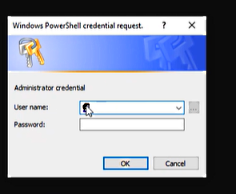
- An elevated command prompt window opens, in which the script runs to create a new kiosk user.
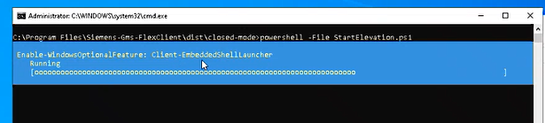
- Next a Windows Power Shell credential request dialog box appears:
- Provide a password for the newly created kiosk user.
- Click OK.
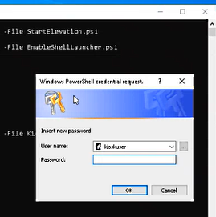
- When setup completes, click Close.
- A message informs you that Windows will shut down in one minute.
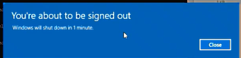
- Wait for Windows to complete its updates and restart automatically.
- After the restart the new kiosk user is automatically logged into Windows
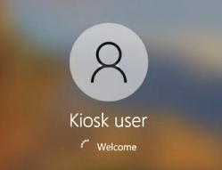
- And the Flex desktop app is automatically started.
In case of an anonymous client, the closed mode configuration is complete at this point. In case of an identified client, it is also necessary to import a certificate for the kiosk user, as in the next section.
(Only for identified client) Import Certificate for the Kiosk User
At this point the computer is operating in closed mode, with the kiosk Windows user constrained to the Flex desktop app. For an identified client, we need to also import the .PFX host certificate file into the Current User\Personal store for the kiosk user.
- Switch Windows user:
- On the keyboard, press Ctrl-Alt-Del and select Switch user.
- Select the Administrator user and provide the password.
- Note that you may have to change the language setting to correctly enter the password.
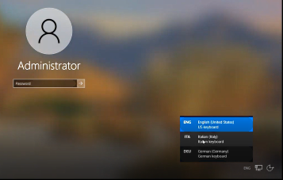
- Start Task Manager, select the Users tab and sign off the kiosk user.
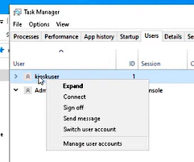
- From Windows Start, select Flex Closed Mode install certificate.
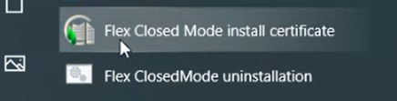
- Here again, if you were not logged into Windows with sufficient rights, you will be prompted to provide Administrator credentials.
- An elevated command prompt opens, in which the script runs.
- When a Select certificate file path dialog box appears, browse for and select the .PFX host certificate file, and click Open.
NOTE: This is the host certificate Issued to the identified Flex computer, that you previously imported during the identified client configuration. 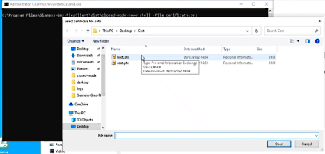
- In the command prompt window you must now enter the Windows password for the kiosk user.
This is the password that you provided when you ran the installation.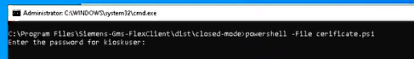
- After you provide the password, you will see that certificate manager gets launched automatically, with the snapin for the Current User store.
Here, right-click the Personal folder and choose All Tasks > Import. 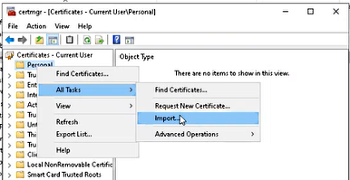
- The first screen of the import wizard automatically selects Current User store. Here click Next.
- In the next screen of the wizard you must browse for the .PFX file to import.
- When you click Browse... you will see a Restrictions dialog box, that warns you that you cannot access the file system.
- However you can still click OK to proceed.
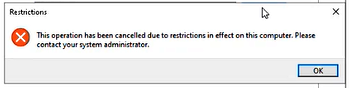
- Now the Open dialog box will show you the only areas that you are allowed to browse. The script has placed the host.pfx file you previously selected on the kiosk user's Desktop for you, so this is where you must look for it:
- First in the file type drop-down select All Files.
- Then in the navigation pane on the left select Desktop.
- You will have to click through the Restrictions dialog box again. Eventually you get to see the host certificate file.
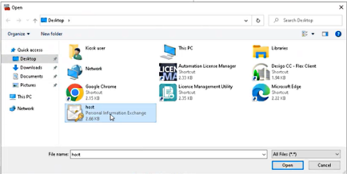
- Select the .PFX host certificate file and click Open. Then in the certificate wizard screen click Next.
- Enter the password for the host certificate and click Next.
- Choose Place all certificates in the following store and pick Personal, then click Next and Finish.
- When finished a message box tells you the import is successful, and you can see the certificate in certificate manager.
- Restart the machine to check whether it starts up correctly.
- In case of Flex default user, check that the Flex desktop app automatically starts, and the default user is automatically logged on.
- If you previously set Remember selection for the host certificate, you do not need to select it again for the kiosk user.
- If a certificate selection dialog box does appear, then you can make the selection now, and set Remember selection so that the certificate does not have to be selected each time.
- From here you either proceed to the login screen or, if configured, a default user is automatically logged in.
- The Flex client application starts in closed mode with the provided credentials.
You cannot run the Flex client application in closed mode on a computer and then switch to the Desigo CC installed client application on the same computer.
To run the Desigo CC installed client application, you must first uninstall Flex closed mode. Then to run again the Flex client application in closed mode, you must reinstall Flex closed mode.